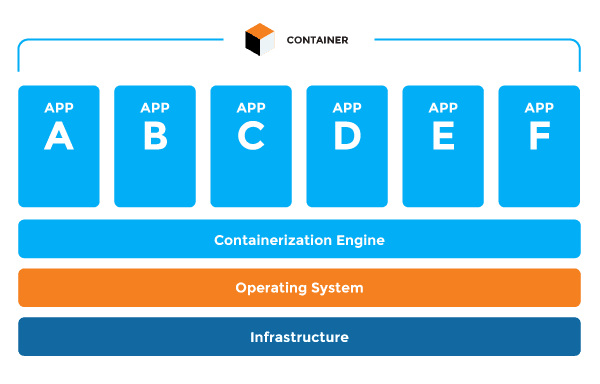

Containers are an alternate kind of virtualization. Containers give a reliable run-time environment for a single application. At the point when you send an application into a container, the application container is ensured to run a similar way regardless of what server it runs on. By deploying applications utilizing containers, you're ensured the application will run a similar way in the turn of development, testing, and production conditions. Containers don't contain as much overhead as virtual machines, making them simpler to distribute.
Containers were designed to improve development while packaging up code and all its dependencies so applications run quickly and reliably from one computing environment to another. A container gathers all of the files necessary to run an application—the runtime files, library files, database files, and any operating system–specific files. The container becomes self-sufficient for the application to run; every-thing the application needs is stored within the container.
Container software
Linux has been in the forefront of container development, making it a popular choice for developers. Well known container software packages are:
- Docker
- AWS Fargate
- Google Kubernetes Engine
What is Docker ?
Nothing beats reading the manual. So if you want to, Docker documentation can be found here : Docker
Docker is an open platform for developing, shipping, and running applications using OS-level virtualization to deliver software in containers. The isolation and security within Docker containers allows a developer to run many containers simultaneously on a given host. Containers are lightweight because they don’t require the extra capacity of a hypervisor but run directly within the host machine’s kernel. Meaning, a developer can run more containers on a given hardware combination compared to when using virtual machines.
Advantages of Using Docker
Fast, consistent delivery of your applications - Docker
The following advantages developers have using Docker goes by the following :
- Developers are able to write code locally and share instances of their work with colleagues using containers
- Applications developed can be pushed into test environments and be executed either using automation or manually
- When finding bugs, the risk of corrupting the main source files is lowered tremendously. Bugs can be fixed within containers and then redeployed
Installation of Docker
Installation Using Mac
- First things first, download the mac installer from here: Docker Desktop for Mac
- Next step is to open a Mac terminal and clone a repository to create your first container using the command:
- "git clone https://github.com/docker/doodle.git" (Be sure to sign into git)
- Now we're going to build and tag a Docker image using the command:
- "cd doodle/cheers2019 && docker build -t initlen/cheers2019"
- Upon building our image, we want to run the image to assure that the installation was successful. Use the commmand:
- "docker run -it --rm initlen/cheers2019"
- Lastly, we want to share our image on Docker using:
- "docker login && docker push initlen/cheers2019"
Installation Complete !